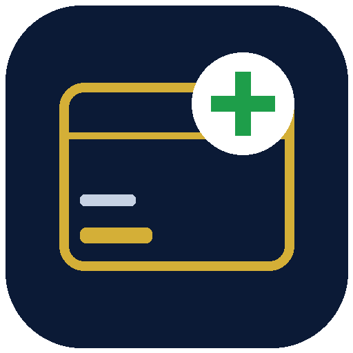

Sehat Sahulat Program (Government of Pakistan) — check your family's eligibility for free treatment at empanelled hospitals with one SMS to 8500: type your CNIC number (13 digits, no dashes) and send.
One-tap SMS to 8500 • Program guide • How treatment works • Coverage explained
⬇ Download APK (v1.0)This app collects and saves nothing. Sehat Sahulat is a Government of Pakistan program; eligibility and coverage are decided by the program only — always confirm by SMS to 8500. Jilan Apps Official is not affiliated with the program.
Need help? WhatsApp: +92 305 7867149